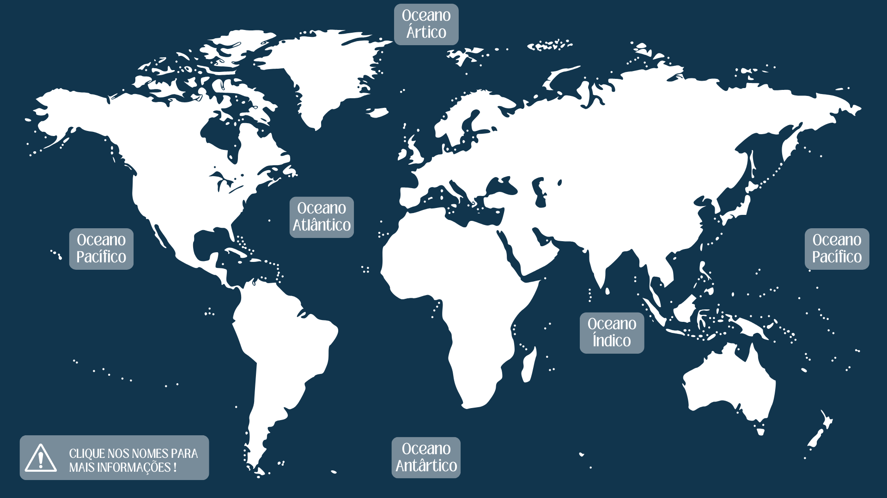

Dia Mundial do Oceanos
8 de Junho

O Dia Mundial dos Oceanos, celebrado anualmente em 8 de junho, tem como principal objetivo destacar a crucial importância dos oceanos para o equilíbrio da vida no planeta Terra. Nesta data, são realizadas diversas atividades de conscientização pública que visam informar e sensibilizar a população sobre os inúmeros perigos que os oceanos enfrentam atualmente. Os oceanos, que cobrem mais de 70% da superfície terrestre, desempenham um papel vital na regulação do clima, na produção de oxigênio e na sustentação de uma vasta biodiversidade. No entanto, eles estão sob constante ameaça devido a atividades humanas como a poluição, a sobrepesca e as mudanças climáticas. Esses problemas não apenas afetam a saúde dos ecossistemas marinhos, mas também têm consequências diretas para a vida humana, afetando a segurança alimentar, os meios de subsistência e as economias globais.
Para enfrentar esses desafios, o Dia Mundial dos Oceanos promove uma série de eventos e campanhas educacionais. Essas iniciativas incluem palestras, workshops, exposições e eventos comunitários, todos focados em aumentar a conscientização sobre a importância da preservação dos oceanos. As campanhas buscam educar as pessoas sobre práticas sustentáveis que podem ser adotadas no dia a dia para minimizar os impactos negativos sobre os ecossistemas marinhos.
Além disso, o Dia Mundial dos Oceanos serve como uma plataforma para fomentar a colaboração entre governos, organizações não-governamentais, cientistas e a sociedade em geral. Essa cooperação é essencial para a implementação de soluções eficazes e duradouras na proteção dos mares. Através de políticas ambientais, pesquisa científica e ações comunitárias, é possível promover a conservação dos recursos marinhos e garantir a saúde dos oceanos para as gerações futuras. Em suma, o Dia Mundial dos Oceanos é uma oportunidade crucial para refletir sobre a interdependência entre os seres humanos e os oceanos, e para tomar medidas concretas que assegurem a preservação desse patrimônio natural. Ao reconhecer e valorizar a importância dos oceanos, podemos trabalhar juntos para proteger e revitalizar esses ecossistemas vitais, garantindo um futuro mais saudável e sustentável para todos.